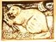

Congratulations! The friendly rats you met wanted to show you some pictures of themselves, and also give a shoutout to their friends. What friendly rats!

1. Jimmie Dams |
2. Godfrey Bandicoot |

3. Nyssa Nocturnal |
4. Ethan Teeth |
5. Peter Porcupine |

6. Cody Construction |

7. Rosie Upriver |

8. Adam A. Agouti |

9. Elmo Myomorpha |

10. Oscar Otter |

11. Franklin Shrew |
12. Sandy Incisors |

13. Clark Ax |
14. Schoolfellow “Hank” Hyrax |

15. Morgan Musquash |
16. Carol Coypu |
17. Claude H. Chinchilla |

18. Horace The Hutia of Haiti |
19. Atlas Gnawer |

20. Cosmo Cricetidae |
21. Rob-Rick Gopher |

22. Tate Pacas |
- He was a member of a team that won the National Medal of Technology. He later got to shoot Charlie Sheen, professionally. His MIT thesis was evaluated by the New York Review of Books. It is the only college thesis that they have ever covered.
- He has piloted the space shuttle more than once, most recently in 2010.
- He became a professional basketball player after graduating from MIT.
- He was a Calvin Klein model, a winner of American Gladiators, and played an FBI agent for 93 episodes of a television series.
- He co-founded a battery company based on nanophosphate technology. He also co-founded a company that makes superconducting wire.
- ”Maker hero” and founder of an electronic hobbyist company, she participated in the drafting of the Open Source hardware definition.
- A digital librarian, he founded the Internet Archive.
- He founded a free online education platform and non-profit organization. His platform has over 200,000 subscribers who watch more than 2700 micro-lectures, predominantly in the sciences and mathematics.
- A serial entrepreneur who has started six companies, he invented the optical mouse.
- One of PC Gamer’s “Game Gods”, he is the master of the leather goddesses, and one of only two game writers admitted to the Science Fiction Writers of America.
- He was a vice president of the European Central Bank who became prime minister of a European country.
- He co-founded and is the CEO of a computer game company. He was a member of Time’s list of the 100 most influential people of 2008, and is credited with redefining the music games genre.
- He was the CEO of an e-commerce company until its acquisition by Oracle. Today he works as a rock musician.
- A Computer Science associate professor and senior researcher at Google, she has been named the “sexiest geek alive”.
- This fictional billionaire playboy, industrialist, and engineer suffered a severe chest injury during a kidnapping.
- He was a Republican senator from New England, and the youngest member of the Senate for the entirety of his six-year term.
- He was a Major League Baseball pitcher.
- He is the science and technology adviser to Steven Spielberg, and invented the “g-speak” data interface used in Minority Report.
- He was an Olympic-level wrestler, an operatic bass baritone, and an actor, who got to sing opera while taking on a dynamic villainous role in an Arnold Schwarzenegger film. He famously wore his brass rat on screen while playing a role in a comedy film.
- He won the main event at the World Series of Poker.
- He sang in the MIT Logarhythms, and went on to be an American Idol finalist.
- He won the Nobel Memorial Prize in Economic Sciences for his analysis of economic governance and business structures for conflict resolution.